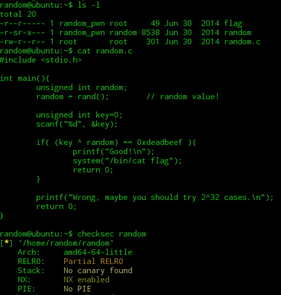
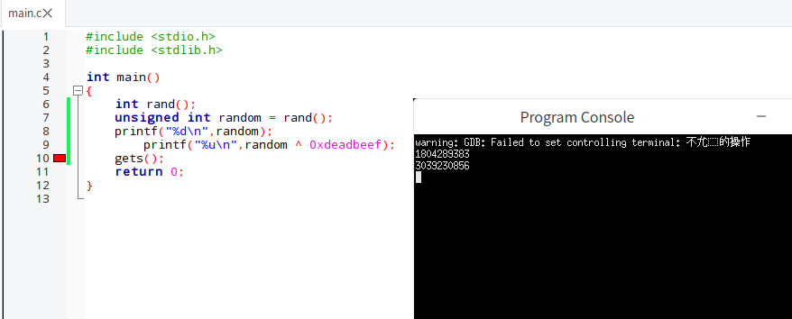
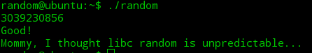

pwnable.kr 6-random
- ^ 异或符 二进制相同为1 不同为0
- rand()函数 本身是一个产生伪随机数的随机函数
srand()是随机数生成器的初始化器 在rand()函数使用之前使用一次 就可以每一次都生成不一样的随机数序列
需要的头文件 #include <stdlib.h>
链接服务器ssh random@pwnable.kr -p2222 pw:guest
源码,检查保护机制:
这里用了rand()赋值给random 产生随机数序列 不会变的随机数序列 然后我们要输入一个key 使得这两个值的异或 与 0xdeadbeef相等 之后就可以得到flag了
首先要将random值得到才可以得出我们需要输入的值是多少
编写c程序:
得出random值 以及将其与0xdeadbeef异或运算后的值就是需要输入的key值
在服务器终端中运行random可执行文件 得到flag